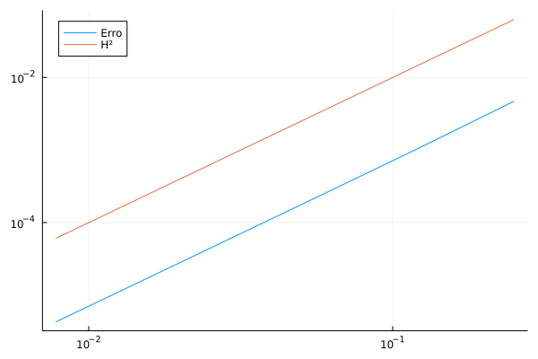

Estudo da Convergência do Erro - Poisson
Aqui apresentaremos um exemplo de estudo da convergência do erro, no caso da equação de Poisson.
Passo a passo
Começamos de forma análoga a Equação de Poisson 2D
using Fease
baseType = BaseTypes.linearLagrange
a = (0.0, 0.0)
b = (1.0, 1.0)Agora, para a montagem da malha, implementamos uma contrutora de malha que dependa apenas da quantidade de intervalos nos eixos, no caso NX.
# Função que recebe uma tupla ou lista e retorna a malha montada com valores de baseType, a, b predefinidos
function monta_malha(NX)
return monta_malha_2D_uniforme(baseType, NX..., a, b)
endEm monta_malha_2D_uniforme, NX é seguido de reticências pois a função espera dois parâmetros antes de baseType e a, b. Portanto, esse ... destaca cada elemento de NX individualmente.
Em seguida, defina os parâmetros do problema
alpha = 1.0
beta = 1.0
f = (x₁, x₂) -> (2 * alpha * π^2 + beta) * sin(π * x₁) * sin(π * x₂)
u = (x₁, x₂) -> sin(π * x₁) * sin(π * x₂)
run_values = RunValues(alpha, beta, 0.0, f, u)
n_dims = 2Para o estudo da convergência do erro, realizaremos uma sequência de sistemas com malhas cujos números de elementos sejam potências de dois, crescentes. Nesse exemplo, trabalharemos com $2^2$ até $2^7$
errsize = 7
NE = 2 .^ [2:1:errsize;]
H = 1 ./ NE # Considerando malhas com intervalos uniformes, a lista de intervalos para cada uma das quantidade de elementos em NE
E = zeros(length(NE)) # Vetor com os erros para cada uma das quantidades de elementosA partir disso, podemos calcular a convergência do erro com
convergence_test!(E, NE, run_values, n_dims, monta_malha)Em seguida, plotamos o erro HxE junto com um gráfico HxH² para verificarmos o paralelismo e confirmarmos que o erro possui grau 2. Para isso, o plot é feito na escala logarítimica de forma que linearize o grau das curvas.
plot(H, E, xaxis = :log10, yaxis = :log10)
plot!(H, H .^ monta_base(baseType, 2).nB, xaxis = :log10, yaxis = :log10)